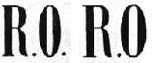
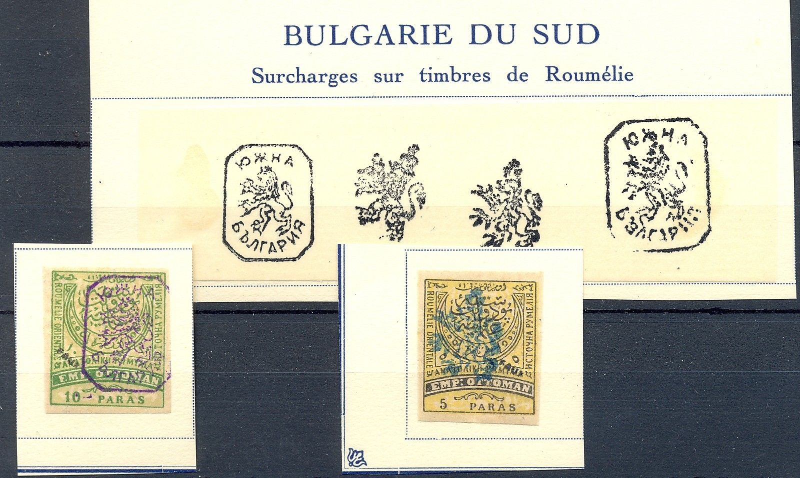
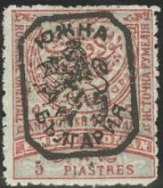
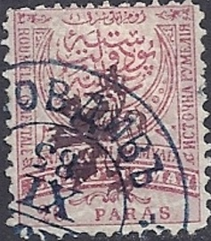
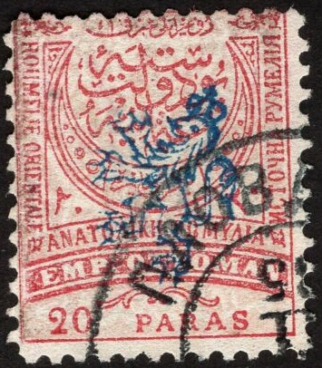
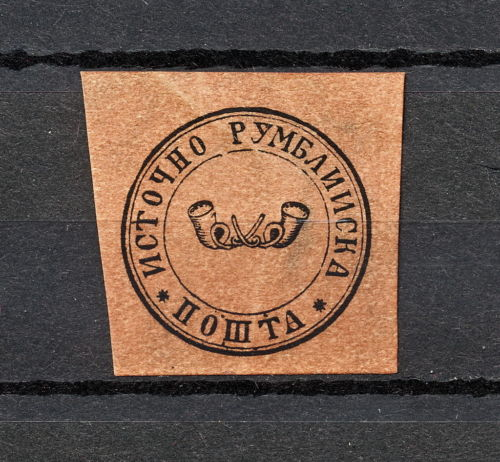
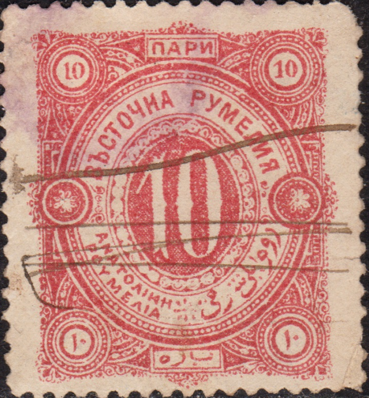

(Forgeries, horizontal parts of the letters very thick)
Roumelie Orientale (now south Bulgaria)
Return To Catalogue - Turkey - Bulgaria
Note: on my website many of the
pictures can not be seen! They are of course present in the
catalogue;
contact me if you want to purchase it.
WARNING: many forged overprints exist for Eastern Roumelia. Not enough caution can be exerted with these stamps. The genuine stamps are very difficult to recognize. Probably most of the stamps shown here are forgeries.
Literature:
Reference A: 'Eastern Roumelia The RO
overprints by Herbert P. Woodward, originally appeared in The
Collectors Club Philatelist, Volume 39, Number 2; can also be
found on:
http://www.tughranet.f2s.com/stamps/collclub/woodward.htm
Reference B: 'Die Entstehung und
Geschichte der Provisorien mit Lowenaufdruck von Sudbulgarien':
http://www.arge-bulgaria.de/loewenaufdrucke1.pdf by Thomas
Hitzler
'1/2 Pre' on 20 pa green 20 pa violet and green 2 Pi black and brown 5 Pi red and blue
Value of the stamps |
|||
vc = very common c = common * = not so common ** = uncommon |
*** = very uncommon R = rare RR = very rare RRR = extremely rare |
||
| Value | Unused | Used | Remarks |
| '1/2 Pre' on 20 pa | RR | RR | |
| 20 pa | RR | RR | |
| 2 Pi | RR | RR | |
| 5 Pi | RRR | RRR | |

These stamps are rare, forged stamps are more numerous than genuine ones. Genuine overprints exist in two types, both about 11 1/2 mm high. There can be dots behind the letters, but they also exist without these dots (or only one dot). The horizontal parts of the letters are very thin and the 'inside' lines of the '0' should be vertical in both types. Type I differs from type II by the broadness of the 'R' and 'O'. The overprints are reasonably clear. Very clear or very smudged overprints are likely to be forgeries. There are some 15 different types of forged overprints known from forges of Sofia, Istanbul and Paris. A picture of a forged overprint can also be found in 'The Fournier Album of Philatelic Forgeries'.
(Forgeries, horizontal parts of the letters very thick)

(probably all forged overprints, images obtained from reference
A, reduced sizes)
(A forged overprint from the Fournier album, image obtained
thanks to Bill Claghorn's forgery site)
According to The Philatelic Journal of America; August 1894, No 116, Vol XII, page 51; the first Bulgarian Exchange Society of Philippopoli, and especially its vice-president Crista Genoff has made forgeries of these overprints. A full description can be found there.
(Sorry, no picture available yet)
10 pa black and lilac 10 pa black and lilac (with additional 'RO' overprint in blue)
Value of the stamps |
|||
vc = very common c = common * = not so common ** = uncommon |
*** = very uncommon R = rare RR = very rare RRR = extremely rare |
||
| Value | Unused | Used | Remarks |
| 10 pa | RR | RR | |
| 10 pa | RR | RR | With additional 'RO' overprint |
(overprints, reduced size, type I and II, images obtained from
reference A)
Two types of the overprint exist, always very clearly printed. Type I has the words written in an elliptic shape. There are several forgeries with the wrong position of the accent above the first 'E' of 'ROUMELIE'. Type II has the inscription written in a circle (more or less). Many forgeries exist. A picture of a forged overprint can also be found in 'The Fournier Album of Philatelic Forgeries' or in reference A.
(forged overprints, reduced size, images obtained from reference
A)
(A forged overprint from the Fournier album, image obtained
thanks to Bill Claghorn's forgery site)
(Reduced size)
5 pa black and olive 5 pa lilac (1884) 10 pa black and green 10 pa green (1884) 20 pa black and red 20 pa lilac 1 Pi black and blue 1 Pi blue 5 Pi red and blue 5 Pi brown
For the specialist: these stamps have perforation 13 1/2 (all values) or 11 1/2 (5 pa lilac and olive and 10 pa green). Remainders of all values with perforation 11 1/2 were sold by the government (also with cancels) in 1908. A forgery of the 1 pi se-tenant with a 1 pi stamp of Turkey is a forgery.
Value of the stamps |
|||
vc = very common c = common * = not so common ** = uncommon |
*** = very uncommon R = rare RR = very rare RRR = extremely rare |
||
| Value | Unused | Used | Remarks |
| 5 pa black and olive | * | * | |
| 5 pa lilac | * | * | |
| 10 pa black and green | ** | * | |
| 10 pa green | * | * | |
| 20 pa black and red | c | c | |
| 20 pa lilac | * | ? | |
| 1 Pi black and blue | ** | ** | |
| 1 Pi blue | * | ? | |
| 5 Pi red and blue | *** | R | |
| 5 Pi brown | RRR | ? | |
I know that Fournier sold forgeries of these stamps. I don't know the distinguishing characteristics of these forgeries.

Part of a Fournier Album with forged stamps sold by Fournier and
a forged cancel as used by him.
The forger Sperati made a forgery of the 5 Pi brown stamp (sorry, no image available yet). This forgery is very rare and Sperati used genuine paper and perforation. Further information can be found in the BPA book on Sperati forgeries.


(Reduced sizes)
First overprint, 'only lion', in black or blue 5 p black and yellow 5 p lilac 10 p black and green 10 p green 20 p black and red 20 p red 1 Pi black and blue 5 Pi red and blue Second overprint, 'lion with text and frameline', in black

(Reduced sizes, could be forgeries)
5 p black and yellow 5 p lilac 10 p black and green 10 p green 20 p black and red 20 p red 1 Pi black and blue 5 Pi red and blue
The first overprint exists in two types (called type 1 and 2) and was intended to be used for inland mail. The second overprint also exist in two types (called type 3 and 4) and was intended to be used for mail abroad. However, all 4 types of overprint were used for inland mail as well as mail abroad. These stamps are very rare; only a few thousand of the 5 p, 10 p, 20 p and 1 Pi were sold, and only about 400 of the 5 Pi. In these numbers all four 4 types are represented. The remainders were send back to the general post office in Sofia and auctioned in 1918. This gives an additional few thousand stamps of each value, for the most common ones, the 10 p and 20 p, we then have a total of about 10.000 stamps issued. Type 4 is very rare and almost never used.
The different types
(Images obtained from Reference B)
Type 1:
This type has four nails at the leg which is most in front, all
other legs have three nails. Colour of the overprint: blue or
black (a red essay overprint should exist, but not satisfactory,
this was again overprinted with blue or black). Firstly a blue
overprint was used on the 5 pa lilac and 10 pa green (and
occasionally the 1 Pi), with ink that made a very blur
impression. A new ink was ordered with a clearer print, all
values were overprinted with this new ink in black or blue.
Type 2:
All legs have three nails. There should be a small dot to the
right of the right (from our point of view) foot of the lion.
Note the small dot to the left of the left foot (from our point
of view). A few rare 5 pa lilac exist with the blurry ink
mentioned in type 1. All others stamps were overprinted with
clear impression in blue or black. Many forgeries exist.
Type 3:
This type has the 'o' alike character in the top left corner
almost circular. The hair of the lion is going down in its neck.
Only black ink was used for this type. Many forgeries exist. All
overprints in blue are forgeries.
Type 4:
This type has the 'o' alike character in the top left corner
almost elliptic. The hair of the lion is combed towards the front
legs. As in type 3, only black ink was used. All overprints in
blue are forgeries.
Some stamps also exist with the 'beetle' overprint of Turkey, they are all very rare (sorry, no picture available yet).
Value of the stamps |
|||
vc = very common c = common * = not so common ** = uncommon |
*** = very uncommon R = rare RR = very rare RRR = extremely rare |
||
| Value | Unused | Used | Remarks |
| All values | R to RRR | R to RRR | |
Forgeries exist; about 75 % of all stamps are forgeries.
Forgeries in blue ink:
(Forged overprints in the wrong colour: blue)
The second overprint was never used in blue ink. The above overprints are all forged.

The above forged overprint has the tail of the lion in one thick black line.
(Forged overprints from the Fournier album, images obtained
thanks to Bill Claghorn's forgery site)
According to The Philatelic Journal of America; August 1894, No 116, Vol XII, page 51; the first Bulgarian Exchange Society of Philippopoli, and especially its vice-president Crista Genoff has made forgeries of these overprints. A full description can be found there.

Forged overprint


Phantasy forgeries, 'RO' and lion overprint together on stamps of Turkey. Examples:
(Reduced sizes)

In 1880 a postcard was issued with two posthorns in a double circle, between the circles the inscription: "HCTOYHO PYMeLNUCRL POWTA". The value was 10 para and the colour blue. This postcard exists with overprint "FRANCO" (in two types) and without this overprint.
Some stamps of Turkey overprinted "ROUMELIE ORIENTALE" were issued in 1879.
A set specially designed for this country was issued in 1880:

Fiscal stamps of 1880, in a small design were issued 10 pa red
and 20 pa green. In a larger size 1 Pi blue (image above), 2 Pi
violet, 3 Pi yellow, 5 Pi brown, 10 Pi red and 20 Pi green.

{kind=link}
{kind=link}
{kind=link}
{kind=link}